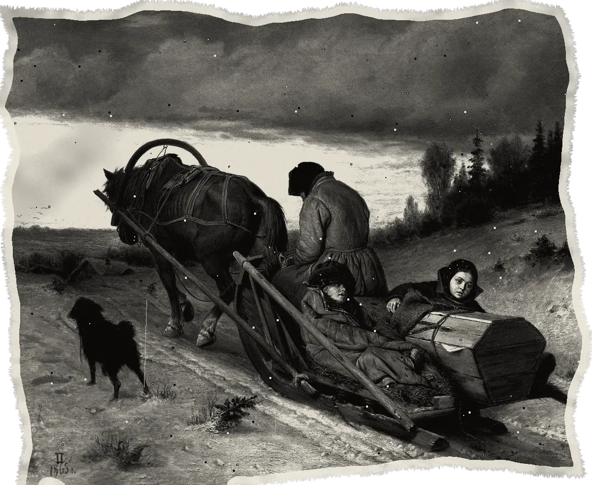
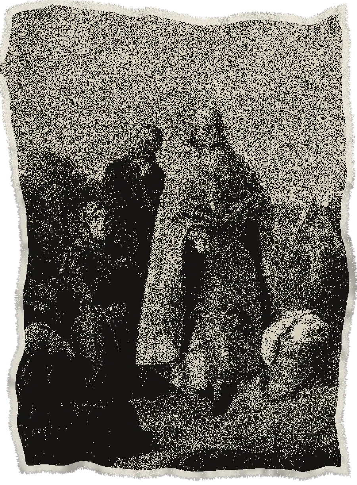
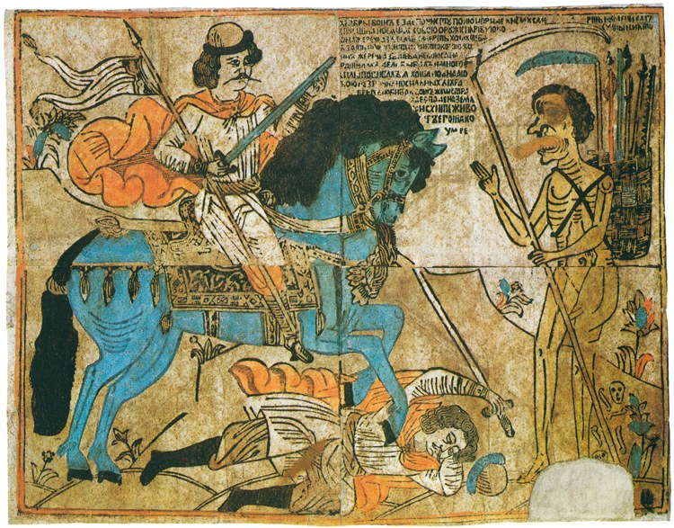
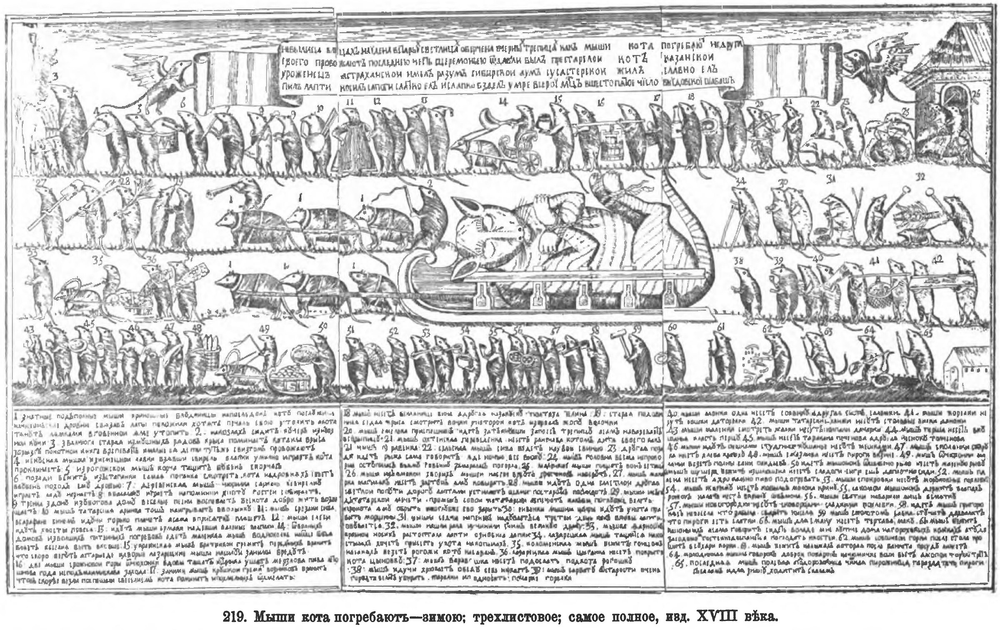

VOL. I · PLATE J · 09 / 09
DEATH IN ART
The sled, the black square, and the deathbed as an argument
Russian art tends to approach death through a single object held at an angle: a coffin on a sled, a square on a wall, a body on a bed.
1865–1935 · Moscow; Nemchinovka · Painting, literature, the avant-garde

J / 01
Perov, 1865
Vasily Perov’s Seeing Off the Dead (Provody pokoinika, 1865; oil on canvas, 45.3 × 57 cm; Tretyakov Gallery, inv. 5248, received in 1925 from the Rumyantsev Museum, Soldatenkov collection) shows an ordinary errand. A thin horse pulls a sled up a snowy road. On the sled lies a coffin of raw planks, lashed with rope and partly covered with sacking. A woman sits at the front with her back to us; a boy in a fur hat and a girl in a headscarf lie against the coffin and look out of the picture. A dog stands on the road behind the sled. No one else is there.
The sky is low and dark, the road bare, with a strip of spruce on the right. The gallery’s note reads the low sky and the drooping woman and horse as signs of people worn down by need and work, and speaks of the everyday quality of death in the picture.
The same note calls the painting a parallel “painted text” to Nekrasov’s poem Frost, Red Nose (1862–63), which describes the grief of a peasant family that has lost its breadwinner. Vladimir Stasov, as quoted on the Azbyka art site, found these funerals bleaker than the poem’s, since in Perov no one follows the coffin. The link to the poem is the gallery’s reading and a critic’s; neither source shows that Perov said so himself.
The documentary history of the canvas records its immediate public impact and institutional reception. Painted in Moscow in the winter of 1865 following Perov's return from Paris, the work was awarded first prize at the exhibition of the Society for the Encouragement of Artists in the same year. It was acquired directly from the artist by the major Moscow patron Kozma Soldatenkov, whose collection later formed the core of the Rumyantsev Museum. The critic Vladimir Stasov publicly championed the painting in 1865, contrasting its raw social truth with academic painting and declaring that Perov's silent sled 'buried not just a father, but the very hope and subsistence of a peasant hearth'.

J / 02
The deathbed as a room
Three Russian prose works about dying sit here as a reading list, not as evidence: Tolstoy’s The Death of Ivan Ilyich (1886), Chekhov’s The Death of a Clerk (1883) and Bunin’s The Gentleman from San Francisco (1915). In Tolstoy a dying man passes through pain and denial to an opening at the very end. In Chekhov a clerk dies of embarrassment. In Bunin a rich American dies in a hotel and the story gives his death no dignity.
The pairing is the atlas’s own reading. Each author uses a death to test the social order, and the results differ.
J / 03
The square that was a gravestone
Kazimir Malevich died in Leningrad on 15 May 1935. His body was cremated in Moscow, and the urn was buried at Nemchinovka on 21 May 1935. Novaya Gazeta says it was lowered into a shallow pit under a large old oak; Moskovsky Komsomolets places the grave under a lone oak in the ‘Romashkovo field’. A wooden cube made by Nikolai Suetin, with a black square on one side, was set on the spot, and a board nailed to the oak named the great artist whose ashes lay there. The Stedelijk log describes a family photograph of 1935 beside the cube; it is not reproduced here.
What followed rests on one newspaper account. Novaya Gazeta writes that Malevich’s name was banned from 1937, that the oak was felled in 1941 for defensive works, that in 1944 relatives found only the stump and the brick base of the cube, and that in the 1950s the roots were dug out and the field sown. Moskovsky Komsomolets says the grave was lost and the cube vanished, and that a replacement cube set up in 1988 had a red square. Radio Svoboda (26 May 2015) says that a residential complex begun in Romashkovo in 2011 stands so close that the burial spot lies four metres from a house foundation and is now a ramp at an entrance, and that a black marble square was set in the grounds about sixty metres away. The authors of the Novaya Gazeta article reported a ground-penetrating radar survey that, they say, settled the location, and Radio Svoboda describes the radar as showing oak roots and disturbed soil where the urn had been; both are accounts of the searchers, not an independent check. The sources read do not say what became of the cube itself.


J / 07
The coffin as an art object
The funeral that preceded the burial was itself made as art, but the accounts disagree on details. Novaya Gazeta describes a Suprematist coffin, a truck with a black square on its radiator driving along Nevsky Prospect, and a railway car to Moscow, where the body was cremated at the Donskoy crematorium. The Thyssen museum credits Nikolai Suetin with decorating the coffin with Suprematist motifs and organising the funeral. The Stedelijk log says the pupils Konstantin Rozhdestvensky and Nikolai Suetin designed it, not Malevich, a belief it calls a legend with some basis; it describes the coffin as green, black and white, with a red circle at the feet and a black square at the head, and says the cross was left out to avoid religious reference. Novaya Gazeta says the opposite on the cross: it states that Malevich asked for a cross-shaped coffin and that his friends and pupils made one with a cross at the end. That statement rests on the article alone and conflicts with the Stedelijk account. The atlas therefore keeps only what the sources share, a Suprematist coffin made by his circle with Suetin’s hand in it, and leaves the cross open. Photographs of the body, in a coffin the log calls architecton-shaped, are described in the log; none is reproduced here.


Text
I come out alone onto the road…
Выхожу один я на дорогу…
Original
English translation
Lermontov wrote the poem in 1841, the year of his death; it was published in Otechestvennye zapiski in 1843. It is a lyric meditation, not a funeral text. The speaker is alone on a flinty road at night; he no longer expects anything from life and seeks freedom and peace, but he explicitly rejects the «cold sleep of the grave» in favour of a living, dreaming sleep.
The poem is used in the plate on death in art because it imagines death as a threshold that is also a place of continuing life. The dark oak at the end is a literary image, not a cemetery custom. The text follows the 1989 edition cited.
- кремнистый путь
- A path of flint or gravel; the road is hard and bare.
- пустыня
- Wilderness, emptiness; not a sandy desert.
- забыться и заснуть
- To forget oneself and fall asleep; the poem distinguishes this from the sleep of death.
Source M. Yu. Lermontov, «Выхожу один я на дорогу…» (1841; published 1843), 20 lines. · open source
Rights Public domain. Lermontov died in 1841; the poem was published in 1843. Public domain in Russia and in the United States. The text follows the Wikisource transcription of Polnoe sobranie stikhotvorenii (1989), vol. 2, p. 83.
Apparatus sources · related plates · terms
Sources for this plate
- tretyakov-perov State Tretyakov Gallery — Vasilii Perov, ‘Provody pokoinika’, 1865 (collection record) (n.d.)
- mk-malevich Moskovskii komsomolets — Na vystavke v Moskve pokazali put’ Malevicha (2023)
- merridale2000 Merridale, Catherine — Night of Stone: Death and Memory in Russia (2000)
- smirnov2015 Smirnov, K. — Казимир Малевич: сенсации 2015 года (2015)
- thyssen-suetin Museo Nacional Thyssen-Bornemisza — Nikolai Suetin (artist biography) (n.d.)
- stedelijk-malevich Stedelijk Studies research log — To Become an Abstraction: Malevich (n.d.)
- azbyka-perov Azbyka (art section) — Проводы покойника — Перов Василий Григорьевич (n.d.)
- svoboda-malevich-grave Radio Svoboda — Могила Малевича (2015)
- lermontov1843 Lermontov, Mikhail Yuryevich — Vykhozhu odin ya na dorogu… (1841 (published 1843))
URLs, access dates and limitations are in the bibliography.